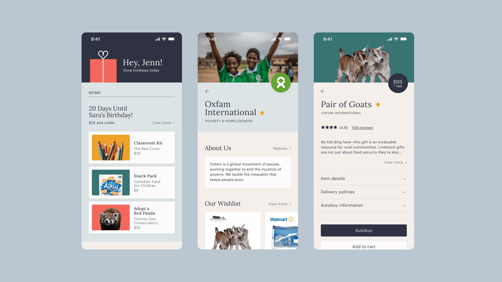
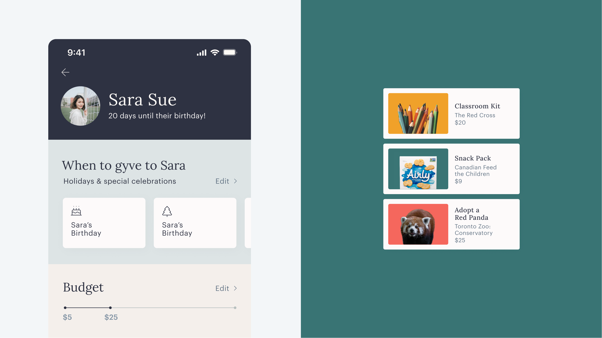
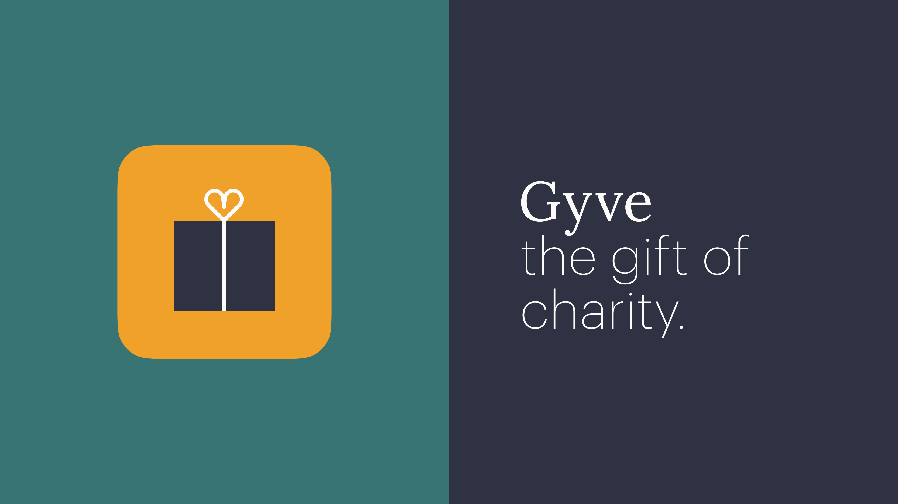

The Scope
Gyve is a mobile application that encourages individuals to purchase charitable items as gifts. Honesty and transparency are highly valued factors when supporting charities, and most individuals give more if they had greater insight into the impact of their money. Gyve aims to address these concerns by empowering users to choose how they
allocate their funds. Furthermore, the app encourages people to contribute more often by donating on
behalf of friends on birthdays and special occasions.
How Does Gyve Work?
Individuals can explore various causes and charities to customize their interests and tailor their
profiles. Each verified charity can build a wishlist with the items that they are in need of, which
are then presented to the user. While shopping for a friend, the app generates gift recommendations
based on multiple factors, including common interests and price range. After finding the perfect
present, users can schedule purchases with autobuy and automatically receive cashback when prices
decrease.


The Approach
With this project, it was essential to consider how to bridge the gap between our wants and our
actions. To encourage individuals to donate more frequently, I realized that it was essential to
increase transparency, simplicity, and connectedness. The app allows users to decide how they
contribute their money, leverages automation to deliver a straightforward experience, and connects
individuals with their friends and the greater community. It also presents the opportunity to
highlight local shops, partner with businesses, and engage with charities that require our support.
